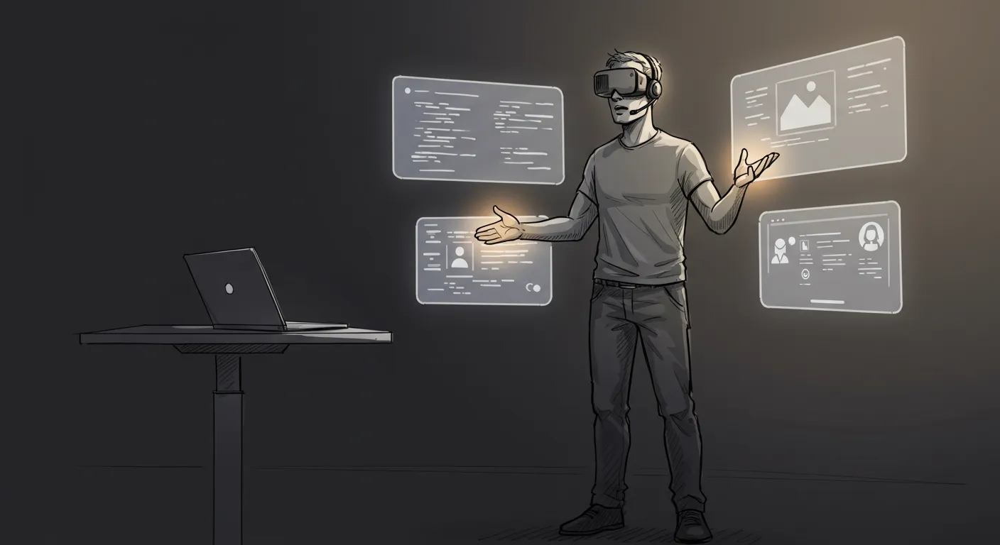
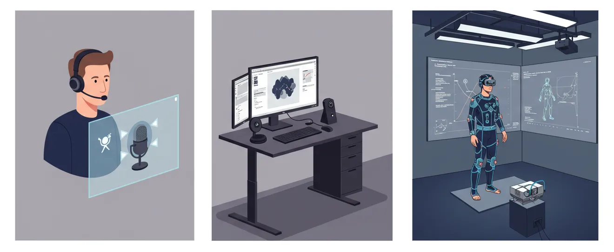
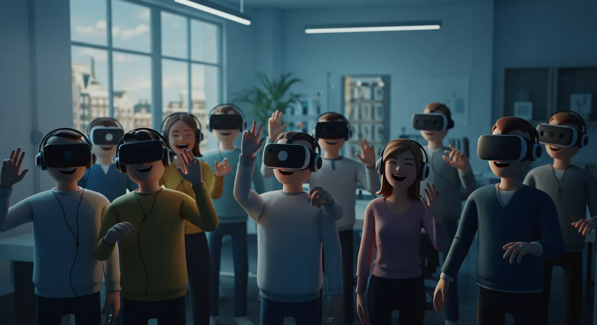

A creative revolution designed with Parkinson's and presence in mind.
Explore the ConceptMost creative tools assume you're seated, still, and typing. But our bodies are made to move—especially when we think, create, or feel. For people with Parkinson’s, this isn't just about comfort. It’s about access, expression, and freedom.
The Standing Studio is voice-first, gesture-aware, and body-friendly. It’s powered by AI and designed for real human rhythms. Whether you're walking, stretching, or pacing, your tools listen and respond.


We believe in a future where creativity moves with the body. Where neurodiverse people lead the way in reshaping human-computer interaction. Where tools don't just assist—they liberate.
